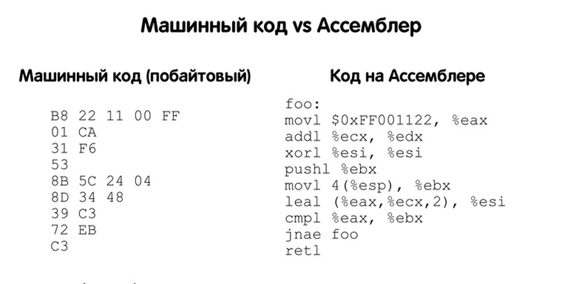
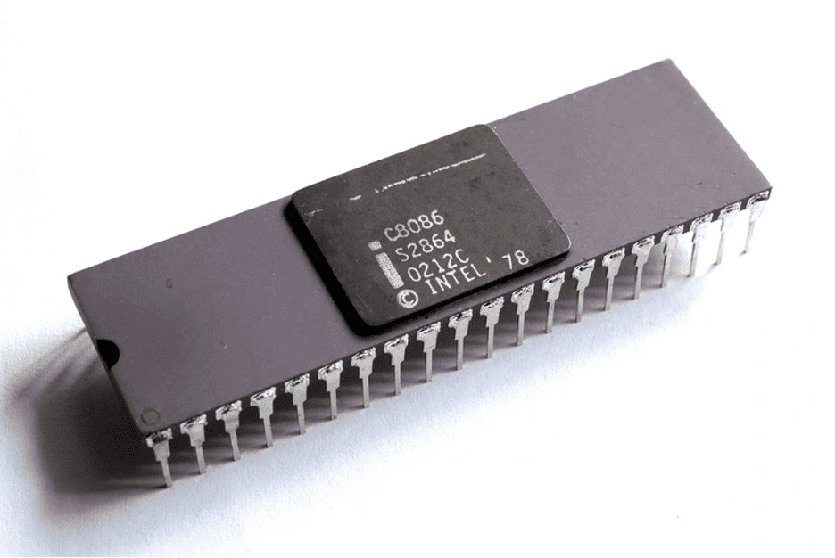
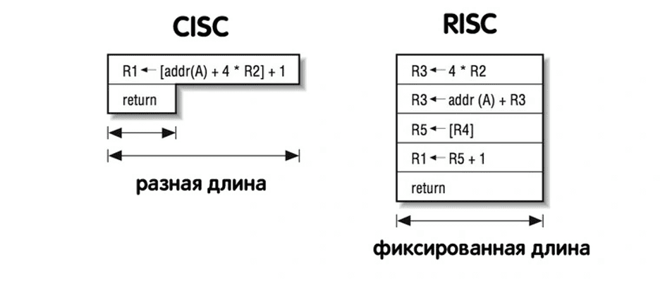
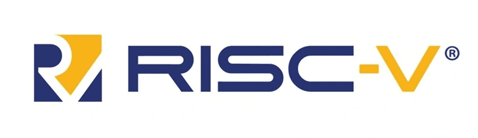

.svg)

.svg)
Разбираемся в архитектурах: x86, ARM и RISK-V
О микропроцессорных архитектурах слышали даже те, кто особо не интересуется компьютерными технологиями. Особенно на фоне последних новостей, например, когда Apple начали устанавливать в свои ноутбуки собственные процессоры на архитектуре ARM. Так что такое архитектура, чем отличаются x86 и ARM и что еще за RISC-V? Расскажем подробнее в нашем материале.
Архитектура x86
В первую очередь давайте выясним, что в принципе стоит понимать под словом «архитектура». В общем понятии этого термина:
Архитектура — набор свойств и качеств, присущих какому-либо семейству процессоров.
При этом не стоит путать термин с «микроархитектурой» — он, как правило, определяет внутреннюю организацию процессора на более глубоком уровне. Например, практически все процессоры Intel имеют архитектуру x86, а вот микроархитектура меняется с каждым новым поколением — Palm Cove (2018), Sunny Cove (2019) и так далее.
На x86 созданы процессоры, начиная от Intel 8086 и заканчивая Core i7/Core i5/Core i3, Xeon. С 2001 также фигурирует название x86-64 — это расширенная архитектура с поддержкой 64-битных регистров.
Таким образом, архитектура — это общий принцип того, как устроен, на каких принципах и с какой системой команд работает процессор. Проще говоря, если вы хотите заставить процессор выполнить какую-то задачу, ее нужно для начала объяснить. Но как именно, сколько и каких команд для этого потребуется — это и определяет архитектура.
Еще несколько десятилетий назад команды для процессоров прописывались буквально вручную через единицы и нули. Это было невероятно долго и утомительно, поэтому спустя какое-то время появился машинный язык программирования — Ассемблер. С его помощью можно было реализовывать простейшие действия вроде сложения, вычитания и так далее уже небольшими командами. Если кто-то из вас изучал Ассемблер в университете, то вы знаете, что писать на нем какие-то программы — задача не из простых.
В итоге инженеры решили, а что если сделать так, чтобы команда вмещала как можно больше полезных действий, могла выполнять и загрузку из памяти, и какую-то арифметическую операцию. Так появилась CISC (complex instruction set computing) архитектура. Почему мы ее упоминаем? x86 — это самый яркий пример CISC-архитектуры.
Соответственно, многое, что актуально для CISC, будет актуально и для x86, а именно:
- нефиксированная длина команды
- малое количество регистров общего назначения
- большое количество различных машинных команд
- развитый механизм адресации операндов
В данном случае архитектура определяет не только некоторые конструктивные особенности (число регистров), но и способ взаимодействия с процессором — систему команд.
Архитектура x86 обеспечивает большие удобства для программистов — множество предподготовленных команд позволяли выполнять определенные действия за минимальное количество строк кода — а это существенная экономия времени и сил. Все эти команды сохранили в ROM-память. Например, в Intel 8086 было «зашито» 98 команд. Программистам было достаточно лишь вызывать нужные.
Архитектура x86 поддерживает несколько режимов работы. Изначально был реализован только реальный режим. Самый простой способ его охарактеризовать — вся память доступна всем. Любое приложение, в том числе и вредоносное, могло получить доступ к любым данным, даже системным.
Решением этой проблемы стало появление защищенного режима, а точнее — колец защиты. Нулевой уровень — самый привилегированный и имеет неограниченный доступ. Этот уровень получили лишь системные процессы. Четвертый уровень в свою очередь имеет минимальный доступ к памяти — его получают всевозможные пользовательские процессы.
Также одной из особенностей х86 является технология SSE (Streaming SIMD Extensions) — набор инструкций, разработанный Intel для вычислений с плавающей точкой. Скалярные процессоры обрабатывают один элемент данных за одну инструкцию (SISD), а векторные способны обрабатывать уже несколько элементов данных (SIMD). Для ускорения процесса вычислений в архитектуре появились так называемые SIMD-расширения. Они позволяли, например, сразу перемножать четыре пары чисел за одну команду.
Если не вдаваться в технические подробности, набор инструкций SSE, а в последствие AVX, позволил повысить производительность до восьми раз в определенных алгоритмах.
С 2005 года архитектура x86 также поддерживает виртуализацию. Это сокрытие фактической реализации через предоставление искусственных «виртуальных» ресурсов. Большинству обычных пользователей виртуализация знакома по таким продуктам, как VMWare и VirtualBox, когда на базе своей ОС вы могли запускать другие операционные системы.
На архитектуре x86 работают практически все десктопные процессоры от Intel и AMD. Несмотря на такое преобладание, x86 и CISC-архитектура в целом имеет ряд минусов.
Главная проблема — это неоднородность инструкций. Они могут иметь разную длину и структуру, из-за чего требуется больше тактов на обработку и больше обращений к памяти. Соответственно, для повышения производительности приходится улучшать аппаратную часть. Это выливается в увеличение не только стоимости, но и тепловыделения.
Именно поэтому, несмотря на все попытки, процессоры на x86-архитектуре так и не смогли пристроить в мобильную электронику. Одной из попыток является линейка процессоров Atom от Intel — некоторые модели встраивались даже в смартфоны и планшеты.
Однако еще в середине 70-х годов инженеры задумывались над проблемой сложных команд. Так появился новый архитектурный подход RISC и одна из его реализаций – ARM.
Архитектура ARM
В философии RISC (англ. Reduced Instruction Set Computer — «компьютер с сокращенным набором команд») инженеры решили устранить главный недостаток CISC. Команды сделали фиксированной длины, но при этом увеличили число регистров, чтобы иметь большее пространство для работы с данными и реже обращаться к памяти.
С точки зрения программирования стало сложнее, поскольку из-за унификации команд одно и то же действие в RISC требует больше инструкций, чем в CISC.
Однако с другой стороны единая длина для всех команд позволила существенно снизить требования к аппаратной начинке процессора. Это в свою очередь привело к удешевлению, пониженному энергопотреблению и тепловыделению.
Стоит понимать, что RISC — это всего лишь концепция, архитектурный подход. Преимущества этого подхода сразу же приметили в британской компании ARM Limited. Они внесли различные усовершенствования в эту концепцию и уже в 1985 году представили свой первый процессор ARM1. В последствие под ARM начали понимать авторскую лицензируемую архитектуру процессоров.
Поскольку изначально ARM задумывалась как усовершенствование архитектуры RISC, то для ранних чипов были характерны некоторые общие черты:
- фиксированный размер команд
- большое число регистров общего назначения
- специализированные команды для операций с памятью — чтения или записи
Однако постепенно разработчики ARM вносили все больше изменений и модификаций, отклоняясь от классической концепции RISC. Например, из 31 регистра программисту доступно всего 16, что не так уж и много. Также в некоторых случаях одна команда в ARM может выполнять не только обработку данных (например, сложение) но и сдвиг. Это позволяет частично уменьшить сложность кода, но за счет увеличения сложности самих команд. Еще одно важная особенность ARM — это развитый набор видов адресации, который изначально не задумывался в концепции RISC архитектуры.
Помимо этого в ARM имеется условное исполнение. Проще говоря, каждая команда может исполняться или не исполняться в зависимости от определенных предустановок (установленных флагов).
Современные мобильные процессоры — это сложная система на кристалле. Помимо ARM-ядер используются всевозможные узкоспециализированные чипы. Например, NEON Data Engine — это, по сути, аналог расширения SSE для архитектуры x86.
Что же получается, архитектура ARM — это более дешевый и унифицированный, но за счет этого менее производительный вариант, чем процессоры на x86-архитектуре? В каком-то смысле — да. Принципиально другой подход к формированию команд и некоторые другие конструктивные особенности сделали ARM отличным вариантом для процессоров мобильной электроники. Однако граница между архитектурами становится все менее явной.
Во-первых, в x86-процессорах уже используется разбиение длинных инструкций на более мелкие. Фактически, в CISC-процессорах применяется своеобразное RISC-ядро, что позволяет повысить производительность. Во-вторых, производительность ARM процессоров постепенно догоняет x86 — Apple M1 и его вариации один из самых ярких примеров. Соответственно, процессоры на этой архитектуре, как и x86, уже могут использоваться в ноутбуках и даже ПК. Почему ARM может стать будущей архитектурой для персональных компьютеров мы рассказали в отдельном материале.
Ключевое отличие этих двух архитектур заключается в системе команд, что свою очередь приводит к различным конструктивным различиям, вроде числа регистров и дополнительных модулей.
Архитектура x86, несмотря на сложные команды и требовательность к аппаратной части, все еще остается одним из лучших решений в соотношении цены и производительности. Переходы на новые техпроцессы и многоядерность позволяют и дальше использовать х86 для высокопроизводительной техники вроде ноутбуков, персональных компьютеров и серверов.
В свою очередь ARM хоть и задумывалась изначально как RISC-подобная, со временем обросла множеством усовершенствований. Это дает приближенную к десктопным процессорам производительность, но, как можно заметить с теми же чипами M1 и M2, еще и больший размер кристалла и тепловыделение. Например, площадь чипа Apple M2 доходит до 155 мм2, что сравнимо с площадью чипа Intel Core i7 8700K.
Архитектура RISC-V
Как мы выяснили, ARM и x86 — это своеобразные противоположности, у каждой из которых свои достоинства и недостатки. Архитектура x86 не подходит для мобильной электроники, но ARM требует лицензирования. Если вы захотите спроектировать свой процессор на архитектуре ARM, вам придется заплатить от одного миллиона долларов. Так что же делать?
Над этим вопросом задумались в отделении информатики Калифорнийского университета в Беркли и в 2010 году представили RISC-V. Первая и самая главная отличительная черта — это полностью открытая архитектура, а значит, вы можете использовать ее абсолютно бесплатно.
RISC-V — это также улучшенная версия классической RISC. Набор команд не представляет собой какую-либо новую технологию, поскольку RISC-V основана на идеях компьютерной архитектуры, которым уже не менее 40 лет. Да, фактически RISC-V — это реализация того самого подхода под названием RISC, который инженеры придумали еще несколько десятилетий назад.
Главное достоинство RISC-V в том, что архитектура не подвергается чрезмерной оптимизации, поэтому подходит для самых разнообразных вычислительных задач. Базовая RISC-V содержит минимальный набор инструкций — всего 47, но при необходимости программисты могут самостоятельно расширять его для решения конкретно своей задачи. Это модульная структура — то есть вы можете взять только то, что вам необходимо.
RISC-V и ARM-архитектуры основаны на одном подходе — RISC (Reduced Instruction Set Computer). В связи с этим они обе подходят для микроэлектроники. Однако ARM — платная и по ходу своего развития претерпела множество изменений. Представьте себе автомобиль, который поддался тюнингу — он стал быстрее и мощнее, но за это приходится платить.
RISC-V в свою очередь — это нетронутый, «стоковый» автомобиль. Да, он не такой быстрый, но бесплатный и, самое главное, вы сами можете выбирать, что в нем «тюнинговать». RISC-V с успехом применяется в простейших микропроцессорах — там, где не нужна высокая производительность.
Самый известный пример — это контроллеры для SSD-дисков Western Digital. Компания Alibaba развивает чипы на RISC-V в рамках дочерней компании T-Head. Также уже выпущено больше десяти различных контроллеров на базе этой архитектуры. Число участников международной организации RISC-V перевалило за сотню — все эти компании видят для себя перспективы в этой архитектуре.
Итог
Архитектура x86 — это яркий представитель CISC-архитектур: большие и сложные команды, требовательность к аппаратной части и высокое энергопотребление. ARM и RISC-V — это представители лагеря RISC-архитектур: упрощенные команды фиксированной длины, небольшое энергопотребление и меньшая требовательность к аппаратной части.
Архитектура ARM — это полностью коммерческое решение, поэтому оно предлагает высочайшую производительность и целую линейку готовых ядер для разных нужд. RISC-V в свою очередь — это базовый конструктор, на основе которого можно проектировать нетребовательные к производительности системы.